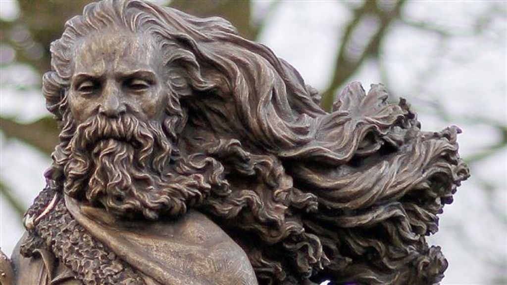
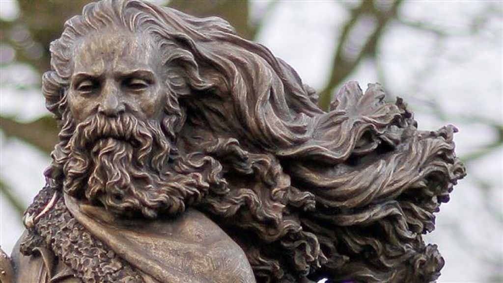
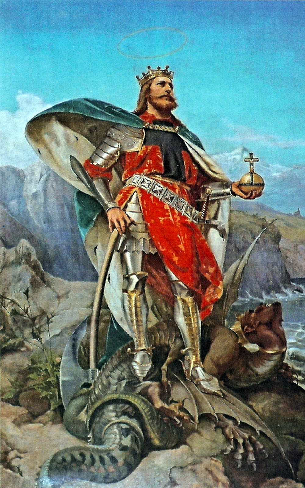
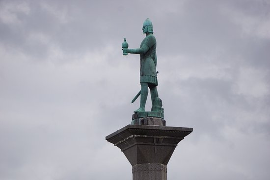
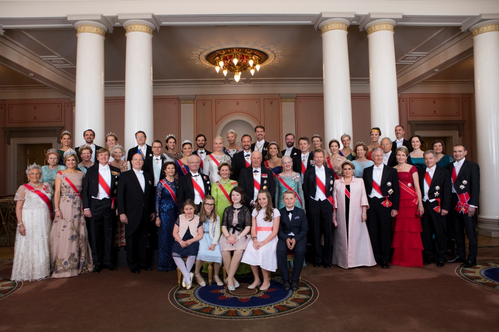
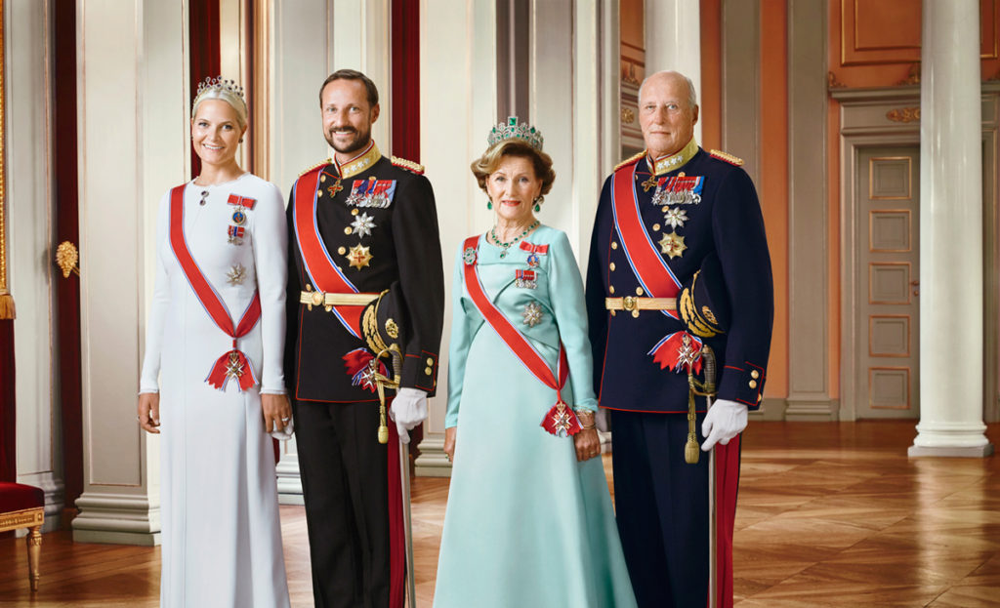
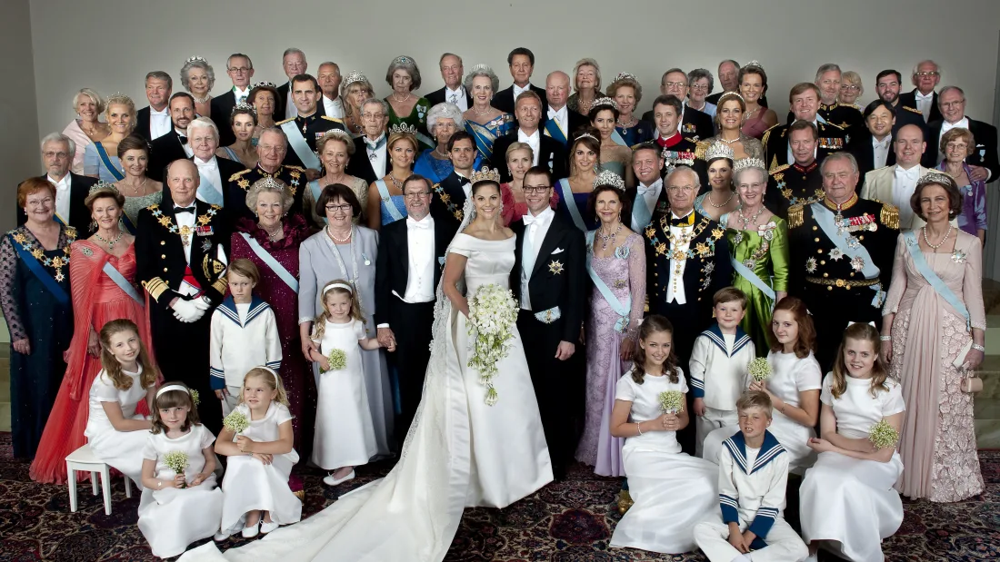
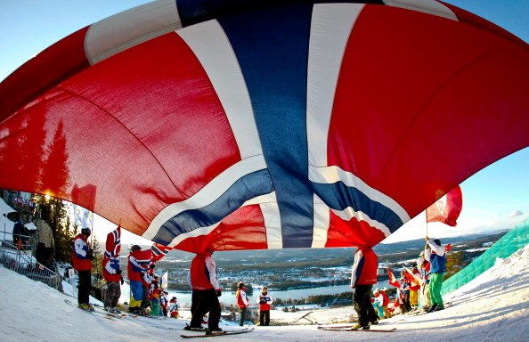
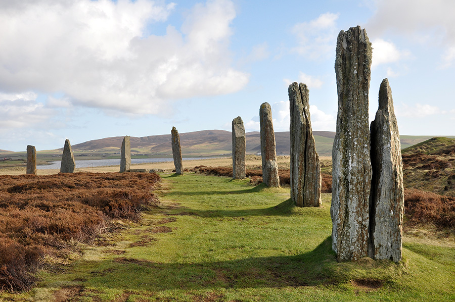

Historia
Norvegjezët janë pasardhës të vikingëve, një popullsi skandinave që luajti një rol shumë të rëndësishëm në historinë europiane mes viteve 800 dhe 1100. Gjatë periudhës vikinge, krahinat që sot janë pjesë e Norvegjisë, filluan të bashkohen gradualisht nën një mbret të vetëm. Mbreti Harald Hårfagre mori nën kontroll pjesën jugore dhe atë perëndimore të Norvegjisë pas betejës së Hafrsfjord-it, në vitin 880, dhe themeloi mbretërinë e tij me qendër në Avaldsnes në Karmøy.
 

Në vitin 995, mbreti Olav Tryggvason ndërtoi kishën e parë në Norvegji në Moster (Bømlo), dhe filloi konvertimin e norvegjezëve në fenë e krishterë. Pas betejës së Stiklestad-it, në vitin 1030, feja e krishterë u bë fe shtetërore e Mbretërisë së Norvegjisë. Pas një periudhe gati 100 vjeçare me luftë civile, në vitin 1130, mbreti Sverreætten arriti të shtrijë pushtetin e tij në të gjithë Norvegjinë. Mbretëria e Norvegjisë arriti kulmin e fuqisë së saj (në aspektin ushtarak, ekonomik dhe kulturor) gjatë sundimit të mbretit Håkon Håkonssen.
 Familja Mbretërore
Familja mbretërore norvegjeze u bashkua me familjen mbretërore suedeze në vitin 1319 dhe më pas me atë daneze në vitin 1380. Anëtari i fundit i familjes mbretërore norvegjeze me të drejtë trashëgimi të fronit të Mbretërisë së Norvegjisë vdiq në vitin 1387. Norvegjia u bë pjesë e Bashkimit të Kalmarit (Kalmarunionen) së bashku me Danimarkën dhe Suedinë në vitin 1397. Në vitin 1450, Suedia doli nga bashkimi si mbretëri më vete. Norvegjia vazhdoi bashkëjetesën me Danimarkën në formën e një bashkimi personal të kurorës (Mbreti i Danimarkës ishte gjithashtu edhe mbret i Norvegjisë, por të dy shtetet do të ishin të pavarur në politikën e brendshme). Ky bashkim, i cili zgjati për 434 vjet, filloi të quhet në shekullin e 18-të, si "nata e 400 viteve" sepse Norvegjia ishte gjysma e dobët e bashkimit dhe praktikisht drejtohej nga Kopenhaga. Periudha 1570-1721, u karakterizua nga luftëra shumëvjeçare të Mbretërisë Danezo-Norvegjeze me Mbretërinë e Suedisë dhe nga taksa të larta për të financuar këto luftëra. Me përjashtim të Luftës së Kalmarit, në përfundim të së cilës, në vitin 1613, u përcaktua se territoret e veriut i përkisnin Norvegjisë, të gjitha luftërat e tjera përfunduan me fitoren e Suedisë dhe humbje të territoreve norvegjeze: Bohuslän, Jämtland dhe Härjedalen
 Mbretëria Danezo-Norvegjeze
Mbretëria Danezo-Norvegjeze ishte aleate e Napoleon Bonoparten ndërsa Mbretëria e Suedisë lidhi aleancë me Anglinë dhe Prusinë. Mbas disfatës së Napoleon Bonopartit, në paqen e Kiel-it në vitin 1814, Norvegjia iu dha nën sundim si shpërblim lufte Mbretit të Suedisë. Gjatë pranverës së vitit 1814, duke përfituar nga vazhdimi i veprimeve luftarake në Evropë, u mblodh Parlamenti Norvegjez në Eidsvold. Parlamenti miratoi me 17 maj 1814 Kushtetutën e Norvegjisë, "Grunnloven av 1814". E frymëzuar nga kushtetutat e SHBA dhe Francës, kushtetuta norvegjeze ishte tepër liberale për kohën e saj. Mbas një lufte të shkurtër mes Danimarkës/Norvegjisë dhe Suedisë, Norvegjia u bë pjesë e një bashkimi personal të kurorës me Suedinë. Danimarka mbajti sovranitetin mbi Groenlandën, Islandën dhe ishujt Farëje (Færøyene). Këto territore ishin deri në 1814 pjesë e Norvegjisë dhe administroheshin nga Norvegjia. Pakënaqësia e norvegjezëve për bashkimin me Suedinë erdhi në rritje dhe në vitin 1905, Suedia u detyrua të njohë pavarësinë e Norvegjisë. Norvegjezët e shprehën vullnetin e tyre për shkëputje nga Suedia me një referendum ku vetëm disa qindra vota ishin në favor të bashkimit me Suedinë. Qeveria norvegjeze ia ofroi kurorën e Norvegjisë princit Carl të Danimarkës. Në një referendum të dytë, shumica e norvegjezëve me të drejtë vote përkrahu monarkinë si formë organizimi të shtetit dhe princin Carl si mbret të Norvegjisë. Në kurorëzimin e tij si mbret i Norvegjisë, princi Carl mori emrin Haakon VII. Familja mbretërore norvegjeze i përket, së bashku me familjen mbretërore të Danimarkës, shtëpisë princërore të Gjermanisë veriore Schleswig-Holstein-Sonderburg-Glücksburg (një nga degët e shtëpisë mbretërore Oldenburg).
Norvegjia si Shtet
Norvegjia ishte shtet asnjanës në Luftën e Parë Botërore. Qeveria norvegjeze mendoi të ndiqte parimin e neutralitetit edhe gjatë Luftës së Dytë Botërore. Me 9 prill 1940, Gjermania sulmoi Danimarkën dhe Norvegjinë. Mbas rreth 2 muaj luftimesh, Gjermania arriti të pushtojë të gjithë Norvegjinë. Pushtimi përfundoi me 9 maj 1945 me kapitullimin e forcave gjermane në Norvegji. Përvoja e Luftës së Dytë Botërore dhe frika e ekspansionit sovjetik shkaktuan një ndryshim rrënjësor në politikën e jashtme të Norvegjisë. Norvegjia është një nga shtetet themeluese të NATO-s në vitin 1949. Norvegjia luajti një rol mjaft aktiv në krijimin e Organizatës së Kombeve të Bashkuara në vitin 1945. Norvegjezët kanë votuar 2 herë në referendum për tu bërë pjesë e Bashkimit Evropian, në 1974 dhe 1994. Në të dy referendumet, shumica e votuesve u shpreh kundër pranimit të Norvegjisë në Bashkimin Evropian.
Historia e Norvegjisë
"Historia e Norvegjisë. Nga epoka e akullnajave deri në ditët tona" është shkruar për të gjithë ata që duan të mësojnë më shumë për historinë e këtij vendi dhe popullit të tij. Ky vëllim, i pasur me ilustrime, shërben për të dhënë një tablo të qartë të zhvillimit kulturor dhe shoqëror në Norvegji - duke filluar nga koha kur njeriu i parë nisi të jetojë në këtë vend, thuajse 12 000 vjet më parë, e deri në ditët tona. Kombinimi i tekstit me harta, ilu-strime dhe diçitura i ofron lexuesit larmi, njohuri
3D Box
Si pershkruhet Norvegjia
Norvegjia përshkruhet shpesh si “Toka e Diellit të Mesnatës”, për shkak se gjatë muajve të verës, nga fundi i majit deri në fund të korrikut, dielli nuk perëndon pothuaj asnjëherë në zonat e vendit që ndodhen në Rrethin e Arktikut, ndërkohë që zona të tjera kanë 20 orë ditë. Megjithatë, në dimër është e kundërta. Në vitin 1251, Henri III-të i Anglisë mori dhuratë një Ari Polar nga mbreti i Norvegjisë. Ai e mbajti në Kullën e Londrës me një zinxhir të gjatë, me qëllim që ariu të notonte në lumin Tamiz. Mbreti Harald i Norvegjisë u betua të mbetej i pamartuar për jetë, nëse nuk martohej me dashurinë e tij të vërtetë, e cila ishte bija e një tregtari rrobash.Mëvonë ata u martuan dhe u bë mbretëreshë e Norvegjisë.
Emri i Norvegjisë
Emri Norvegji do të thotë rruga drejt veriut. Zyrtarisht njihet si Mbretëria e Norvegjisë. Norvegjia është një prej vendeve më të pasur dhe gjithashtu më paqësorë në botë. Është vendi i gjashtë më i madh në Evropë, por për nga popullsia renditet i 28-ti. Vendi e fitoi pavarësinë nga Suedia në vitin 1905. Norvegjia ka një popullsi prej 5.3 milionë banorë dhe niveli i alfabetizmit është 100 për qind dhe jetëgjatësia mesatare është 81.5 vite dhe sipas Enciklopedisë Britanike, norvegjezët lexojnë më shumë se cilido popull tjetër i botës. Arsimimi në këtë vend është tërësisht falas.